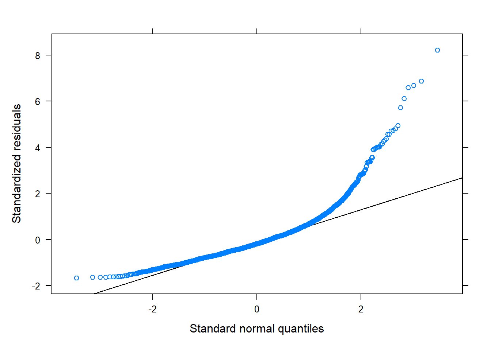
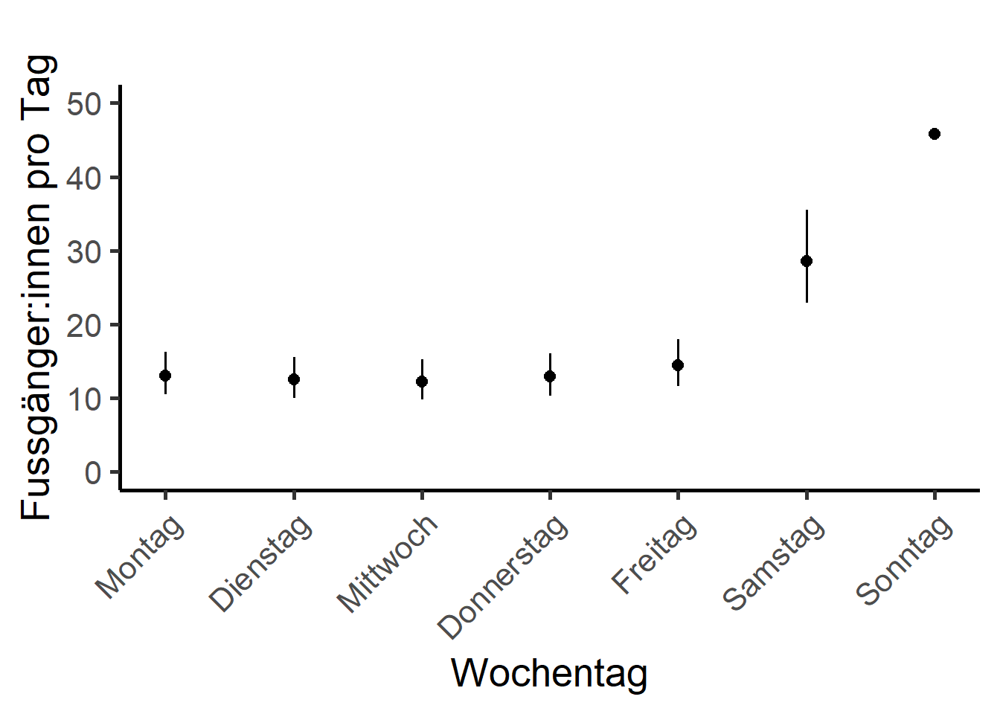

# Erstelle ein df indem die taeglichen Zaehldaten und Meteodaten vereint sind
umwelt <- inner_join(depo_d, meteo, by = c("Datum" = "time"))KW 44: Lösung Multivariat
Aufgabe 1: Verbinden von Daten (Join)
Aufgabe 2: Convenience Variablen, Faktoren, Skalieren
# Wir muessen unserem Daten noch zuweisen, ob Ferienzeit oder nicht. Das machen wir mit einer Funktion
# erstelle zuerst ein dataframe zur Zuweisung der Ferien # credits Melina Grether
Start <- c(Winterferien_2016_start, Fruehlingsferien_2017_start, Sommerferien_2017_start, Herbstferien_2017_start,
Winterferien_2017_start, Fruehlingsferien_2018_start, Sommerferien_2018_start, Herbstferien_2018_start,
Winterferien_2019_start, Fruehlingsferien_2019_start, Sommerferien_2019_start, Herbstferien_2019_start,
Winterferien_2020_start, Fruehlingsferien_2020_start, Sommerferien_2020_start, Herbstferien_2020_start,
Winterferien_2021_start, Fruehlingsferien_2021_start, Sommerferien_2021_start, Herbstferien_2021_start,
Winterferien_2022_start, Fruehlingsferien_2022_start, Sommerferien_2022_start, Herbstferien_2022_start)
End <- c(Winterferien_2016_ende, Fruehlingsferien_2017_ende, Sommerferien_2017_ende, Herbstferien_2017_ende,
Winterferien_2017_ende, Fruehlingsferien_2018_ende, Sommerferien_2018_ende, Herbstferien_2018_ende,
Winterferien_2019_ende, Fruehlingsferien_2019_ende, Sommerferien_2019_ende, Herbstferien_2019_ende,
Winterferien_2020_ende, Fruehlingsferien_2020_ende, Sommerferien_2020_ende, Herbstferien_2020_ende,
Winterferien_2021_ende, Fruehlingsferien_2021_ende, Sommerferien_2021_ende, Herbstferien_2021_ende,
Winterferien_2022_ende, Fruehlingsferien_2022_ende, Sommerferien_2022_ende, Herbstferien_2022_ende)
# verbinde das zu einem df
ferien <- data.frame(Start, End)
# schreibe nun eine Funktion zur zuweisung Ferien. WENN groesser als start UND kleiner als
# ende, DANN schreibe ein 1
for (i in 1:nrow(ferien)){
umwelt$Ferien[umwelt$Datum >= ferien[i,"Start"] & umwelt$Datum <= ferien[i,"End"]] <- 1
}
umwelt$Ferien[is.na(umwelt$Ferien)] <- 0
# hat das funktioniert? zaehle die anzahl Ferientage
sum(umwelt$Ferien)
# Faktor und integer
# Im GLMM wird das Jahr als random factor definiert. Dazu muss es als
# Faktor vorliegen. Monat und KW koennen die Besuchszahlen auch erklaeren.
# auch sie muessen faktoren sein
umwelt <- umwelt |>
mutate(Jahr = as.factor(Jahr)) |>
mutate(KW = as.factor(KW)) |>
mutate(Monat = as.factor(Monat)) |>
# zudem muessen die die nummerischen Wetterdaten auch als solche abgespeichert sein
mutate(tre200nx = as.numeric(tre200nx))|>
mutate(tre200jx = as.numeric(tre200jx))|>
mutate(rre150j0 = as.numeric(rre150j0))|>
mutate(rre150n0 = as.numeric(rre150n0))|>
mutate(sremaxdv = as.numeric(sremaxdv))
# falls das noch zu NA's gefuehrt hat, muessen diese entfernt werden
sum(is.na(umwelt))
umwelt <- na.omit(umwelt)
summary(umwelt)
str(umwelt)
# Unser Modell kann nur mit ganzen Zahlen umgehen. Zum Glueck habe wir die Zaehldaten
# bereits gerundet.
# unser Datensatz muss ein df sein, damit scale funktioniert
umwelt <- as.data.frame(umwelt)
# Variablen skalieren
# Skalieren der Variablen, damit ihr Einfluss vergleichbar wird
# (Problem verschiedene Skalen der Variablen (bspw. Temperatur in Grad Celsius,
# Niederschlag in Millimeter und Sonnenscheindauer in Minuten)
umwelt <- umwelt |>
mutate(tre200jx_scaled = scale(tre200jx),
tre200nx_scaled = scale(tre200nx),
rre150j0_scaled = scale(rre150j0),
rre150n0_scaled = scale(rre150n0),
sremaxdv_scaled = scale(sremaxdv))Aufgabe 3: Korrelationen und Variablenselektion
# Korrelierende Variablen koennen das Modelergebnis verfaelschen. Daher muss vor der
# Modelldefinition auf Korrelation getestet werden.
# Erklaerende Variablen definieren
# Hier wird die Korrelation zwischen den (nummerischen) erklaerenden Variablen berechnet
cor <- cor(umwelt[,12:16]) # in den [] waehle ich die skalierten Spalten.
# Mit dem folgenden Code kann eine simple Korrelationsmatrix aufgebaut werden
# hier kann auch die Schwelle für die Korrelation gesetzt werden,
# 0.7 ist liberal / 0.5 konservativ
# https://researchbasics.education.uconn.edu/r_critical_value_table/
cor[abs(cor)<0.7] <- 0 #Setzt alle Werte kleiner 0.7 auf 0 (diese sind dann ok, alles groesser ist problematisch!)
cor
# Korrelationsmatrix erstellen
# Zur Visualisierung kann ein einfacher Plot erstellt werden:
chart.Correlation(umwelt[,12:16], histogram=TRUE, pch=19)# ich schliesse die Temperatur bei Nacht in den Modellen aufgrund der Korelation aus,
# da ich davon ausgehe, dass die Temperatur bei Tag das Besuchsaufkommen besser erklaertAufgabe 4 (OPTIONAL): Automatische Variablenselektion
# Automatisierte Variablenselektion (achtung, RECHENINTENSIV)
# fuehre die dredge-Funktion und ein Modelaveraging durch
# Hier wird die Formel für die dredge-Funktion vorbereitet
f <- Total ~ Wochentag + Ferien + Phase + Monat +
tre200jx_scaled + rre150j0_scaled + rre150n0_scaled +
sremaxdv_scaled
# Jetzt kommt der Random-Factor hinzu und es wird eine Formel daraus gemacht
f_dredge <- paste(c(f, "+ (1|Jahr)"), collapse = " ") |>
as.formula()
# Das Modell mit dieser Formel ausführen
m <- glmer.nb(f_dredge, data = umwelt, na.action = "na.fail")
# Das Modell in die dredge-Funktion einfügen (siehe auch ?dredge)
all_m <- dredge(m)
# suche das beste Modell
print(all_m)
# Importance values der Variablen
# hier wird die wichtigkeit der Variablen in den verschiedenen Modellen abgelesen
MuMIn::sw(all_m)
# Schliesslich wird ein Modelaverage durchgeführt
# Schwellenwert für das delta-AIC = 2
avgmodel <- model.avg(all_m, rank = "AICc", subset = delta < 2)
summary(avgmodel)Aufgabe 5: Verteilung der abhängigen Variabel pruefen
# pruefe zuerst nochmals, ob wir NA im df haben:
sum(is.na(umwelt$Total))
f1<-fitdist(umwelt$Total,"norm") # Normalverteilung
f1_1<-fitdist((umwelt$Total + 1),"lnorm") # log-Normalvert (beachte, dass ich +1 rechne.
# log muss positiv sein; allerdings kann man die
# Verteilungen dann nicht mehr miteinander vergleichen).
f2<-fitdist(umwelt$Total,"pois") # Poisson
f3<-fitdist(umwelt$Total,"nbinom") # negativ binomial
f4<-fitdist(umwelt$Total,"exp") # exponentiell
# f5<-fitdist(umwelt$Total,"gamma") # gamma (berechnung mit meinen Daten nicht möglich)
f6<-fitdist(umwelt$Total,"logis") # logistisch
f7<-fitdist(umwelt$Total,"geom") # geometrisch
# f8<-fitdist(umwelt$Total,"weibull") # Weibull (berechnung mit meinen Daten nicht möglich)
gofstat(list(f1,f2,f3,f4,f6,f7),
fitnames = c("Normalverteilung", "Poisson",
"negativ binomial","exponentiell", "logistisch",
"geometrisch"))
# die 2 besten (gemaess Akaike's Information Criterion) als Plot + normalverteilt,
plot.legend <- c("Normalverteilung", "exponentiell", "negativ binomial")
# vergleicht mehrere theoretische Verteilungen mit den empirischen Daten
cdfcomp(list(f1, f4, f3), legendtext = plot.legend)# --> Verteilung ist gemäss AICc exponentiell. negativ binomial ist auch nicht schlecht.
# --> ich entscheide mich für diese beide und probiere mit beiden Modelle aus.Aufgabe 6: Multivariates Modell berechnen
# Hinweise zu GLMM: https://bbolker.github.io/mixedmodels-misc/glmmFAQ.html
# Ich verwende hier die Funktion glmer aus der Bibliothek lme4.
# Die Totale Besucheranzahl soll durch verschiedene Parameter erklaert werden.
# Die verschiedenen Jahre sollen hierbei nicht beachtet werden,
# sie wird als random Faktor bestimmt --> Wir betrachten jedes Jahr für sich und nicht
# den allgemeinen Trend
# Einfacher Start
# Auch wenn wir gerade herausgefunden haben, dass die Verteilung negativ binomial ist,
# berechne ich für den Vergleich zuerst ein einfaches Modell der Familie poisson.
Tages_Model <- glmer(Total ~ Wochentag + Ferien + Phase + Monat +
tre200jx_scaled + rre150j0_scaled + rre150n0_scaled +
sremaxdv_scaled +
(1|Jahr), family = poisson, data = umwelt)
summary(Tages_Model)
# Inspektionsplots
plot(Tages_Model, type = c("p", "smooth"))qqmath(Tages_Model)# pruefe auf Overdispersion
dispersion_glmer(Tages_Model) #it shouldn't be over 1.4
# wir gut erklaert das Modell?
r.squaredGLMM(Tages_Model)
# check for multicollinearity
# https://rforpoliticalscience.com/2020/08/03/check-for-multicollinearity-with-the-car-package-in-r/
car::vif(Tages_Model) # VIF für beide predictors = 1, d.h. voneinander unabhängig (kritisch wird es ab einem Wert von >4-5)
# Berechne ein negativ binomiales Modell
# gemäss AICc die zweitbeste Verteilung
Tages_Model_nb <- glmer.nb(Total ~ Wochentag + Ferien + Phase + Monat +
tre200jx_scaled + rre150j0_scaled + rre150n0_scaled +
sremaxdv_scaled +
(1|Jahr), data = umwelt)
summary(Tages_Model_nb)
plot(Tages_Model_nb, type = c("p", "smooth"))qqmath(Tages_Model_nb)dispersion_glmer(Tages_Model_nb)
r.squaredGLMM(Tages_Model_nb)
car::vif(Tages_Model_nb)
# auf quadratischen Term testen ("es gehen weniger Leute in den Wald, wenn es zu heiss ist")
Tages_Model_nb_quad <- glmer.nb(Total ~ Wochentag + Ferien + Phase + Monat +
tre200jx_scaled + I(tre200jx_scaled^2) + rre150j0_scaled + rre150n0_scaled +
sremaxdv_scaled +
(1|Jahr), data = umwelt)
summary(Tages_Model_nb_quad)
plot(Tages_Model_nb_quad, type = c("p", "smooth"))qqmath(Tages_Model_nb_quad)dispersion_glmer(Tages_Model_nb_quad)
r.squaredGLMM(Tages_Model_nb_quad)
car::vif(Tages_Model_nb_quad)
# Interaktion testen, da Ferien und / oder Wochentage einen Einfluss auf
# die Besuchszahlen waehrend des Lockown haben koennen!
# (Achtung: Rechenintensiv!)
# Tages_Model_nb_int <- glmer.nb(Anzahl_Total ~ Wochentag * Ferien + Phase +
# tre200jx_scaled + I(tre200jx_scaled^2) *
# rre150j0_scaled + sremaxdv_scaled +
# (1|KW) + (1|Jahr), data = umwelt)
#
# summary(Tages_Model_nb_int)
# plot(Tages_Model_nb_int, type = c("p", "smooth"))
# qqmath(Tages_Model_nb_int)
# dispersion_glmer(Tages_Model_nb_int)
# r.squaredGLMM(Tages_Model_nb_int)
# Vergleich der Modellguete mittels AICc
cand.models<-list()
cand.models[[1]] <- Tages_Model
cand.models[[2]] <- Tages_Model_nb
cand.models[[3]] <- Tages_Model_nb_quad
Modnames<-c("Tages_Model","Tages_Model_nb",
"Tages_Model_nb_quad")
aictab(cand.set=cand.models,modnames=Modnames)
#K = Anzahl geschaetzter Parameter (2 Funktionsparameter und die Varianz)
#Delta_AICc <2 = Statistisch gleichwertig
#AICcWt = Akaike weight in %
# --> Ich entscheide mich bei diesen drei Modellen für das Tages_Model_nb_quad
# Warum: statistisch das beste und ich denke die Quadratur macht Sinn!
# zudem wissen wir gem. Test der Verteilungen, dass negativ binomial Sinn macht.
# PROBLEM: alle drei Modelle erfüllen gem. der Modelldiagnostik die VOrausetzungen
# nicht komplett.
# Berechne ein Modell mit exponentieller Verteilung:
# gemäss AICc der Verteilung die zweitbeste
# https://stats.stackexchange.com/questions/240455/fitting-exponential-regression-model-by-mle
Tages_Model_exp <- glmer((Total+1) ~ Wochentag + Ferien + Phase + Monat +
tre200jx_scaled + I(tre200jx_scaled^2) + rre150j0_scaled + rre150n0_scaled +
sremaxdv_scaled + (1|Jahr), family = Gamma(link="log"), data = umwelt)
summary(Tages_Model_exp, dispersion=1)
plot(Tages_Model_exp, type = c("p", "smooth"))qqmath(Tages_Model_exp)
dispersion_glmer(Tages_Model_exp) #it shouldn't be over 1.4
r.squaredGLMM(Tages_Model_exp)
car::vif(Tages_Model_nb_quad)
# --> Die zweitbeste Verteilung (exp) führt auch nicht dazu, dass die Modellvoraussetzungen besser
# erfüllt werden
# 4.5 Transformationen ####
# Die Modellvoraussetzungen waren überall mehr oder weniger verletzt.
# Das ist ein Problem, allerdings auch nicht ein so grosses.
# (man sollte es aber trotzdem ernst nehmen)
# Schielzeth et al. Robustness of linear mixed‐effects models to violations of distributional assumptions
# https://besjournals.onlinelibrary.wiley.com/doi/10.1111/2041-210X.13434
# Lo and Andrews, To transform or not to transform: using generalized linear mixed models to analyse reaction time data
# https://www.frontiersin.org/articles/10.3389/fpsyg.2015.01171/full
# die Lösung ist nun, die Daten zu transformieren:
# mehr unter: https://www.datanovia.com/en/lessons/transform-data-to-normal-distribution-in-r/
# berechne skewness coefficient
library(moments)
skewness(umwelt$Total)
# A positive value means the distribution is positively skewed (rechtsschief).
# The most frequent values are low; tail is toward the high values (on the right-hand side)
# log 10, da stark rechtsschief
Tages_Model_quad_Jahr_log10 <- lmer(log10(Total+1) ~ Wochentag + Ferien + Phase + Monat +
tre200jx_scaled + I(tre200jx_scaled^2) + rre150j0_scaled + rre150n0_scaled +
sremaxdv_scaled + (1|Jahr), data = umwelt)
summary(Tages_Model_quad_Jahr_log10)
plot(Tages_Model_quad_Jahr_log10, type = c("p", "smooth"))qqmath(Tages_Model_quad_Jahr_log10)dispersion_glmer(Tages_Model_quad_Jahr_log10)
r.squaredGLMM(Tages_Model_quad_Jahr_log10)
car::vif(Tages_Model_nb_quad)
# lmer zeigt keine p-Werte, da diese schwer zu berechnen sind. Alternative Packages berechnen diese
# anhand der Teststatistik. Achtung: die Werte sind wahrscheinlich nicht präzise!
# https://stat.ethz.ch/pipermail/r-sig-mixed-models/2008q2/000904.html
tab_model(Tages_Model_quad_Jahr_log10, transform = NULL, show.se = TRUE)
# natural log, da stark rechtsschief
Tages_Model_quad_Jahr_ln <- lmer(log(Total+1) ~ Wochentag + Ferien + Phase + Monat +
tre200jx_scaled + I(tre200jx_scaled^2) + rre150j0_scaled + rre150n0_scaled +
sremaxdv_scaled + (1|Jahr), data = umwelt)
summary(Tages_Model_quad_Jahr_ln)
plot(Tages_Model_quad_Jahr_ln, type = c("p", "smooth"))qqmath(Tages_Model_quad_Jahr_ln)
dispersion_glmer(Tages_Model_quad_Jahr_ln)
r.squaredGLMM(Tages_Model_quad_Jahr_ln)
car::vif(Tages_Model_nb_quad)
# --> Die Modellvoraussetzungen sind nicht deutlich besser erfüllt jetzt wo wir Transformationen
# benutzt haben. log10 und ln performen beide etwa gleich.
# Zusatz: ACHTUNG - Ruecktransformierte Regressionskoeffizienten zu erlangen (fuer die Interpretation, das Plotten),
# ist zudem nicht moeglich (Regressionskoeffizienten sind nur im transformierten Raum linear).
# Ein ruecktransformierter Regressionskoeffiziente haette eine nicht-lineare Beziehung mit der
# abhaengigen Variable.
# 4.6 Exportiere die Modellresultate ####
# (des besten Modells)
tab_model(Tages_Model_nb_quad, transform = NULL, show.se = TRUE)
# The marginal R squared values are those associated with your fixed effects,
# the conditional ones are those of your fixed effects plus the random effects.
# Usually we will be interested in the marginal effects.Aufgabe 7: Modellvisualisierung
rescale_plot_num <- function(input_df, input_term, unscaled_var, scaled_var, num_breaks, x_lab, y_lab, x_scaling, x_nk) {
plot_id <- plot_model(input_df, type = "pred", terms = input_term, axis.title = "", title="")
labels <- round(seq(floor(min(unscaled_var)), ceiling(max(unscaled_var)), length.out = num_breaks+1)*x_scaling, x_nk)
custom_breaks <- seq(min(scaled_var), max(scaled_var), by = ((max(scaled_var)-min(scaled_var))/num_breaks))
custom_limits <- c(min(scaled_var), max(scaled_var))
plot_id <- plot_id +
scale_x_continuous(breaks = custom_breaks, limits = custom_limits, labels = c(labels), labs(x=x_lab)) +
scale_y_continuous(labs(y=y_lab), limits = c(0,50)) +
theme_classic(base_size = 20)
return(plot_id)
}
## Tagesmaximaltemperatur
input_df <- Tages_Model_nb_quad
input_term <- "tre200jx_scaled [all]"
unscaled_var <- umwelt$tre200jx
scaled_var <- umwelt$tre200jx_scaled
num_breaks <- 10
x_lab <- "Temperatur [°C]"
y_lab <- "Fussgänger:innen pro Tag"
x_scaling <- 1 # in prozent
x_nk <- 0 # x round nachkommastellen
p_temp <- rescale_plot_num(input_df, input_term, unscaled_var, scaled_var, num_breaks,
x_lab, y_lab, x_scaling, x_nk)
p_temp
ggsave("temp.png", width=15, height=15, units="cm", dpi=1000,
path = "fallstudie_s/results/")
## Wochentag
rescale_plot_fac <- function(input_df, input_term, unscaled_var, scaled_var, num_breaks, x_lab, y_lab, x_scaling, x_nk) {
plot_id <- plot_model(input_df, type = "pred", terms = input_term, axis.title = "", title="")
plot_id <- plot_id +
scale_y_continuous(labs(y=y_lab), limits = c(0,50)) +
theme_classic(base_size = 20)+
theme(axis.text.x = element_text(angle = 45, vjust = 1, hjust=1))
return(plot_id)
}
input_df <- Tages_Model_nb_quad
input_term <- "Wochentag [all]"
unscaled_var <- umwelt$Wochentag
scaled_var <- umwelt$Wochentag
num_breaks <- 10
x_lab <- "Wochentag"
y_lab <- "Fussgänger:innen pro Tag"
x_scaling <- 1 # in prozent
x_nk <- 0 # x round nachkommastellen
p_wd <- rescale_plot_fac(input_df, input_term, unscaled_var, scaled_var, num_breaks,
x_lab, y_lab, x_scaling, x_nk)
p_wd
ggsave("wd.png", width=15, height=15, units="cm", dpi=1000,
path = "fallstudie_s/results/")